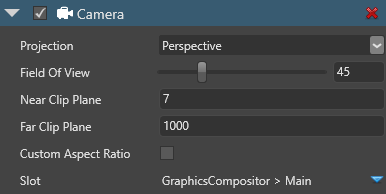
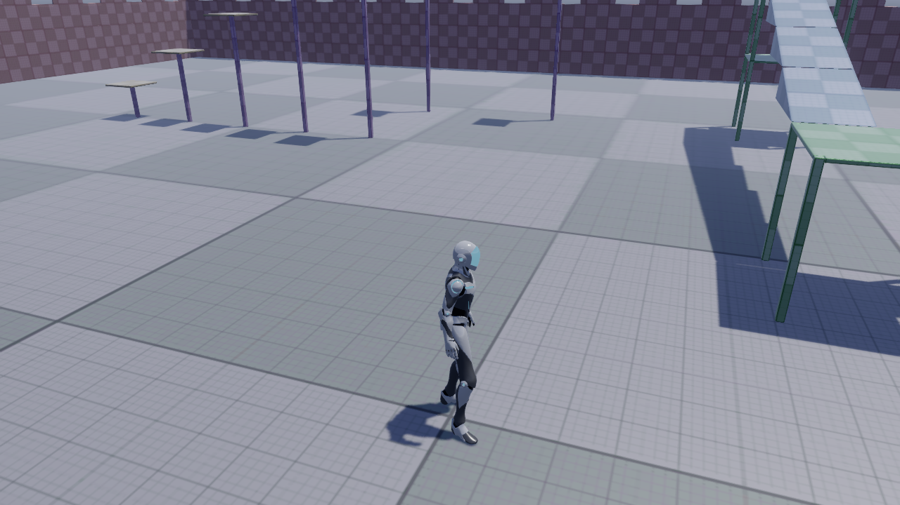
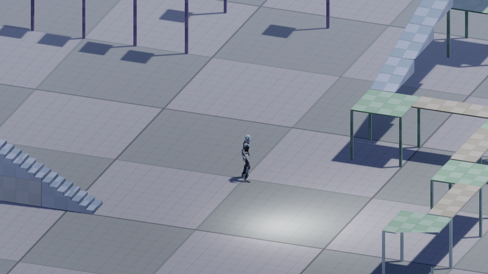
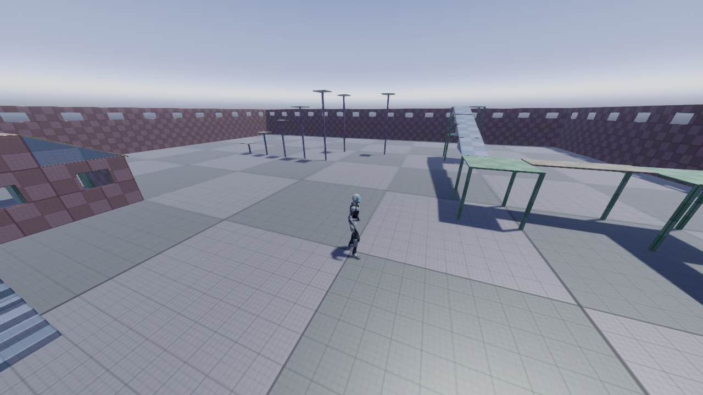
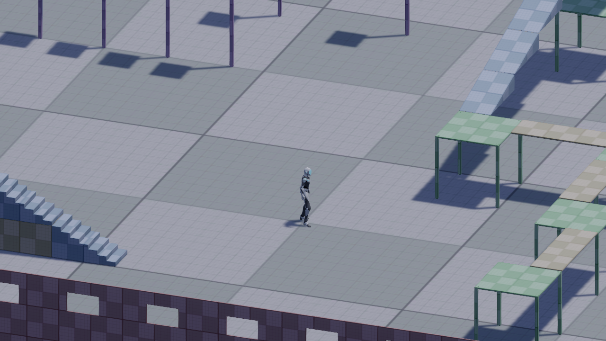
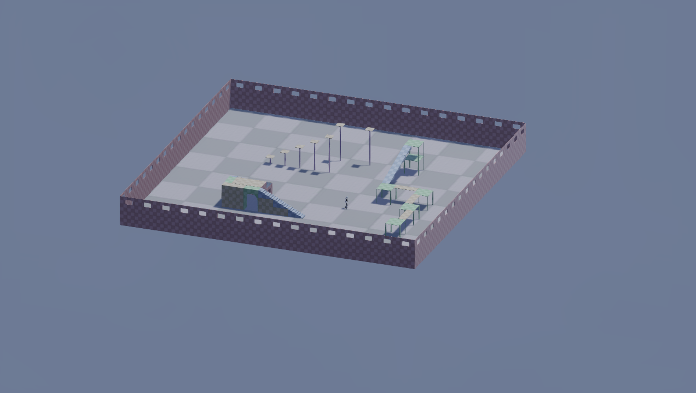
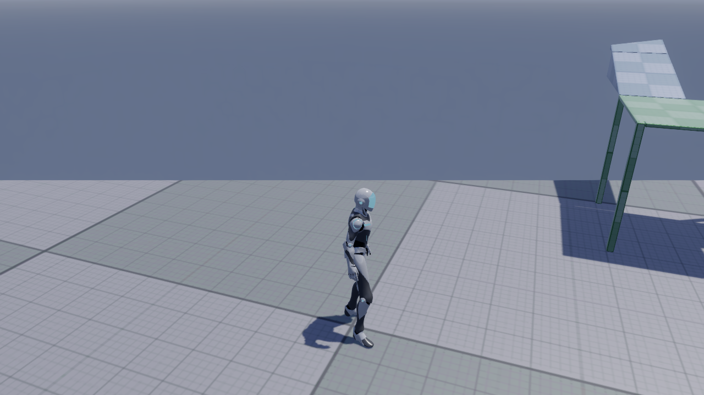
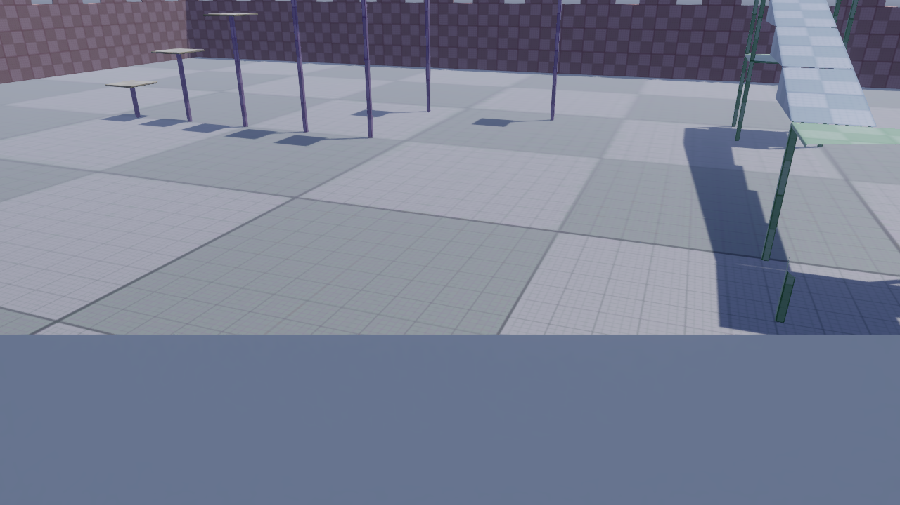
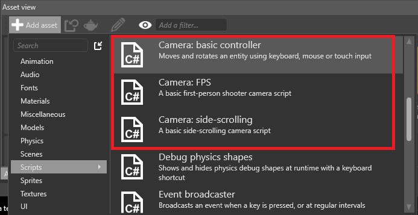
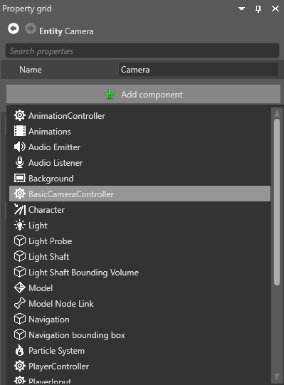

カメラ
初級 デザイナー
カメラは、シーンを切り取ってプレイヤーに表示します。カメラがないと、ゲーム内では何も見ることができません。
シーンにはカメラの数に制限はありません。
Game Studio でカメラを作る
シーンエディタ内の何もないところを右クリックして Camera を選択し、さらに、作成したいカメラの種類を選択します（PerspectiveまたはOrthographic）。

Game Studio は、カメラコンポーネントがアタッチされたエンティティを作成します。
あるいは、カメラにしたいエンティティを選択し、プロパティグリッドで [Add component] をクリックして Camera を選択します。

カメラのプロパティ

| プロパティ | 説明 |
|---|---|
| Projection | カメラが使用する投影の種類（透視投影（Perspective）または平行投影（Orthographic） |
| Field of view | 垂直方向の視野（単位：度）。透視投影を使う場合に指定します。 |
| Orthographic Size | 平行投影の高さ（幅はターゲットの比率に基づいて自動的に計算されます）。平行投影を使う場合に指定します。これには、ズームイン、ズームアウトの効果があります。 |
| Near Clip Plane | カメラで見ることのできる最も近い点 |
| Far Clip Plane | カメラで見ることのできる最も遠い点 |
| Custom aspect ratio | カスタムアスペクト比オプション。有効にしない場合は、自動的にレンダーターゲットの比率に調整されます。 |
| Aspect Ratio | カスタムアスペクト比。Custom aspect ratioオプションを有効にした場合に指定します。 |
| Slot | グラフィックスコンポジターで使用されるカメラスロット。詳細についてはカメラ スロットを参照してください。 |
透視投影カメラと平行投影カメラ
透視投影（perspective）カメラは、シーン内のオブジェクトの「実世界」の透視投影を提供します。このビューでは、カメラの近くにあるオブジェクトが大きく見えたり、同じ長さの線が現実とは異なる長さの線になって見えたりします。透視投影カメラは、三人称視点や一人称視点のゲームなど、リアルな遠近法を必要とするゲームに最もよく使用されます。
平行投影（orthographic）カメラでは、対象物の大きさは、カメラからの距離に関わらず常に同じです。平行線が接触することはなく、消失点もありません。平行投影カメラは、戦略ゲームや 4X ゲーム、ロールプレイングゲームなど、アイソメトリック視点のゲームに最もよく使用されます。

| 透視投影（perspective） | 平行投影（orthographic） |
|---|---|
|  |  |
視野（Field of view; 透視投影モードのみ）
カメラが透視投影モードに設定されている場合、**視野（firld of view）**は、カメラの内部構造を変化させ、シーンのズームインとズームアウトを行う効果があります。高設定（90 以上）では、視野は引き伸ばされた「魚眼レンズ」のようなビューになります。デフォルト設定は 45 です。
| 視野: 45 (既定値) | 視野: 90 |
|---|---|
|  |
平行投影サイズ（平行投影モードのみ）
カメラが平行投影モードに設定されている場合、**平行投影サイズ（orthographic size）**は、ズームインとズームアウトの効果があります。
| 平行投影サイズ: 10 (既定値) | 平行投影サイズ: 50 |
|---|---|
|  |  |
近面と遠面
近い平面と遠い平面で、カメラの視野の始まりと終わりが決まります。
**近面（near plane）**は、カメラが映すことのできる最も近い点です。既定値は 0.1 です。この点より手前にあるオブジェクトは描画されません。
**遠面（far plane）**は、描画距離とも言われ、カメラが写すことのできる最も遠い点です。この点より遠くにあるオブジェクトは描画されません。既定値は 1000 です。
Stride は、近面と遠面の間の領域をレンダリングします。

| 近面 0.1 (既定値)、遠面 50 | 近面 7、遠面 1000 (既定値) |
|---|---|
|  |  |
| 遠面の値が小さいと、近距離のオブジェクトは描画されません。 | 近面の値を大きくすると、カメラに近いオブジェクトは描画されません。 |
カメラ スクリプト
カメラスクリプトを使って、カメラを制御することができます。Stride は、FPS カメラスクリプト、横スクロールカメラスクリプト、基本的なカメラコントローラスクリプトの、3つのカメラスクリプトテンプレートを提供しています。
Game Studio でカメラスクリプトを追加する
アセットビューで、[Add asset] > [Scripts] をクリックし、追加したいカメラスクリプトを選択します。

シーンエディターで、制御したいカメラを持つエンティティを選択します。
プロパティグリッドで、[Add component] をクリックし、使いたいカメラスクリプトを選択します。

Game Studio は、エンティティにカメラスクリプトを追加します。
スクリプトの作り方と使い方の詳細については、スクリプトを参照してください。
カメラスロット
カメラスロットは、グラフィックスコンポジターをシーンのカメラにリンクします。各カメラをスロットに割り当てて、それからコンポジターが使用するスロットを定義します。これは、毎回新しいカメラを割り当てなくても、ルートシーンやグラフィックスコンポジターを変更することができるということを意味しています。
詳細については、カメラ スロットを参照してください。
テクスチャにカメラを描画する
カメラのビューをテクスチャーに送り、そのテクスチャーをシーン内のオブジェクトに使用することができます。例えば、防犯カメラの映像など、同じシーン内のテレビ画面にシーンの一部を表示させることができます。詳しくは、レンダー テクスチャーを参照してください。